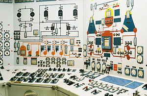
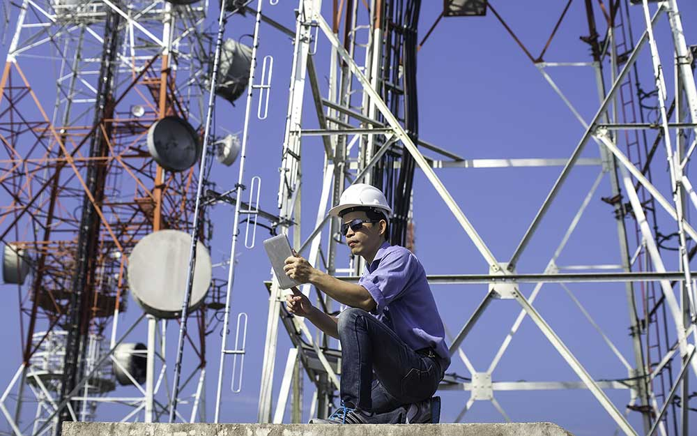

Teknik Elektro
Teknik Elektro merupakan bidang ilmu yang mempelajari listrik dan aplikasinya dalam kehidupan sehari-hari. Mempelajari ilmu dan pengetahuan seputar konsep, perancangan, pengembangan, serta produksi perangkat listrik dan elektronik. Kamu juga akan banyak membahas metode pembangkit dengan sumber energi baru, metode penyimpanan energi, dan metode kontrol penghematan energi. Mata kuliah Jurusan teknik elektro secara umum diantaranya: Rangkaian listrik, Sensor, Mikrokontroller, Matematika Diskrit, Pengukuran Besaran Listrik, Sistem komunikasi, pemrograman, dan lain-lain. Mahasiswa jurusan Teknik Elektro akan berkutat dengan aplikasi kelistrikan, elektronika, dan elektromagnet selama 4 tahun atau 8 semester agar bisa lulus menyandang gelar Sarjana Teknik bidang Teknik Elektro.
Sub Jurusan teknik elektro
Secara umum, ada tiga bidang yang menjadi fokus di jurusan Teknik Elektro, yaitu Sistem tenaga (arus kuat), teknik kendali (arus lemah), dan telekomunikasi.
Sistem tenaga

Bidang sistem tenaga listrik berhubungan dengan pembangkitan dan transmisi daya listrik dari satu tempat ke tempat lain. Kamu akan belajar cara membangun, mengembangkan serta mendesain sistem distribusi tenaga listrik, mulai dari komponen, pemeliharaan, distribusi serta pengembangan sistem tenaga listrik itu sendiri. Mata kuliah yang dipelajari diantaranya Rangkaian listrik, Energy dan Konversi Energi elektrik, Tegangan tinggi, Sistem transmisi distribusi, Sistem Tenaga Listrik , Proteksi sistem Tenaga dan lain-lain.
Teknik kendali

Merupakan ilmu yang mempelajari kestabilan sistem. Mata kuliah yang dipelajari diantaranya: Sistem kendali, Sistem Kendali fuzzy, Robotika. Aplikasi sistem kendali sangat luas diantaranya pada bidang robotika, manufaktur, industri proses dan bahkan pada perangkat dalam kehidupan sehari-hari yang sering kita gunakan seperti kulkas, pendingin rungan, dll. Penelitian pada sistem kendali menuntut kita untuk dapat mengaplikasikan metode kendali seperti kendali klasik, kendali modern, kendali cerdas dan metode kendali lainnya untuk dapat diterapkan pada bidang yang dibahas sebelumnya. Prospek kerja bidang ini diantaranya Industri proses (seperti oil & gas, pembangkit listrik, farmasi, dan lain-lain), Industri food & beverage, Industri manufaktur, dan semua industri yang menggunakan hirarki piramida otomasi untuk pengelolaan plantnya.
Teknik telekomunikasi

Teknik telekomunikasi fokus pada upaya rekayasa dalam mengirim informasi dari satu titik ke titik lain. Mata kuliah yang dipelajari diantaranya Sistem komunikasi bergerak, Sinyal dan system, Antena, Pengolahan Citra Digital Jaringan dan lain-lain. Prospek kerja bidang telekomunikasi diantaranya ahli frekuensi radio (teknologi berbasis nirkabel) atau ahli jaringan (teknologi berbasis kabel), Wireless engineer, Network engineer, Core network engineer, RF (Radio frequency) engineer, dan lain-lain.